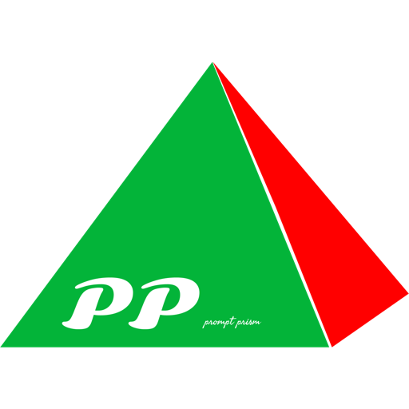
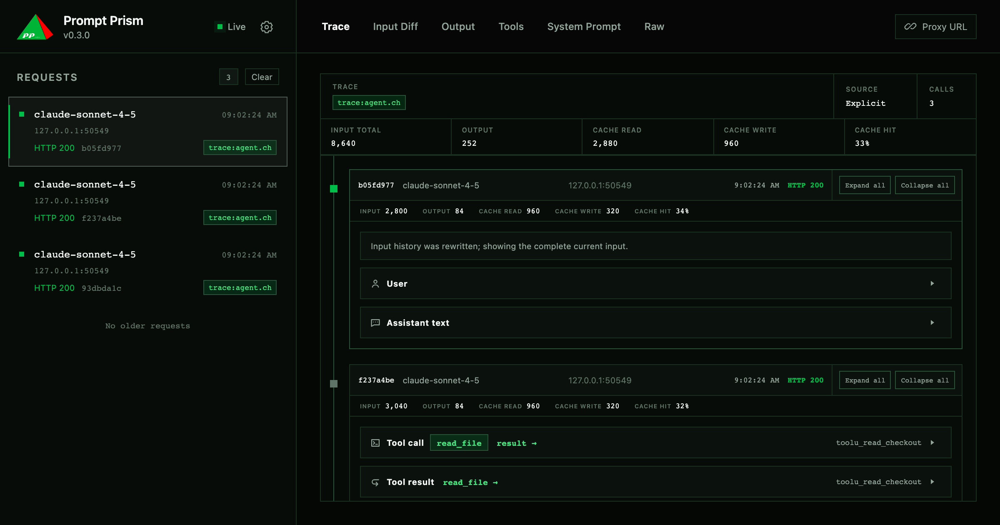

追踪每一次调用
跨捕获记录跟踪用户输入、推理、助手文本、工具调用和工具结果，在关联事件之间跳转，直达真实参数。

Prompt Prism本地模型检查
Prompt Prism 是一个透明的本地代理，它揭示提示词变更、规范化后的模型输出、工具活动，以及完整的多请求 Agent 轨迹。
npm install -g prompt-prism
Node.js 20+ · MIT 许可 · 零运行时依赖

01 / 检查
从请求列表直达确切的工具参数，无需再从原始日志中重建事件。
跨捕获记录跟踪用户输入、推理、助手文本、工具调用和工具结果，在关联事件之间跳转，直达真实参数。
Input Diff 定位新增和删除的消息，再比较 System、Tools 和请求选项。
浏览声明的 schema 和解析后的参数，从用量汇总跳转到 Trace 中的每次实际调用。
检查文本、推理、用量、错误、停止原因和提供商无关的工具参数。
不支持的流量照常转发，并以脱敏后的 HTTP 请求和响应形式保留。
02 / 透明
SSE 和 JSON 响应立即转发，捕获与分析在旁路进行。
03 / 兼容
自动检测解析第一个可信请求，并为进程锁定协议。
04 / 本地设计
捕获记录保存在本地数据目录中。认证头部和 cookie 会在存储前脱敏；达到配置上限时，最早捕获的记录先被清理。
05 / 开始
安装 CLI，选择提供商 Base URL，把 SDK 指向 localhost。
# 安装
npm install -g prompt-prism
# 使用提供商 Base URL 启动
p2 start --upstream-base-url https://api.anthropic.com
# 仪表盘
http://127.0.0.1:1028/_pp/06 / 深入
开源 · MIT